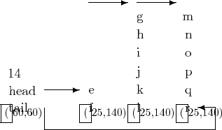
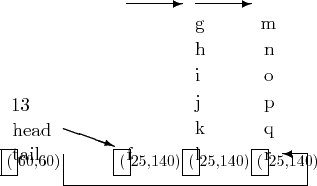
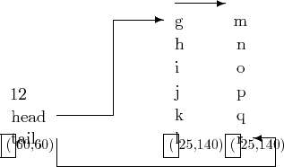

Buffering for character special devices is provided via a set of four word blocks, each of which provides storage for six characters. The prototype storage block is ``cblock'' (8140) which incorporates a word pointer (to a similar structure) along with the six characters.
Structures of type ``clist'' (7908) which contain a character counter plus a head and tail pointer are used as ``headers'' for lists of blocks of type ``cblock''.
``cblock''s which are not in current use are linked via their head pointers into a list whose head is the pointer ``cfreelist'' (3149). The head pointer for the last element of the list has the value ``NULL''.
A list of ``cblock''s provides storage for a list of characters. The procedure ``putc'' may be used to add a character to the tail of such a list, and ``getc'', to remove a character from the head of such a list.
Figures 23.1 through 23.4 illustrate the development of a list as characters are deleted and added.


Initially the list is assumed to contain the fourteen characters ``efghijklmnopqr''. Note that the head and tail pointers point to characters. If the first character, ``e'', is removed by ``getc'', the situation portrayed in Figure 23.1 changes to that of Figure 23.2. The character count has been decremented and the head pointer has been advanced by one character position.
If a further character, ``f'', is removed from the head of the list, the situation becomes as in Figure 23.3. The character count has been decremented; the first ``cblock'' no longer contains any useful information and has been returned to ``cfreelist''; and the head pointer now points to the first character in the second ``cblock''.

The question now poses itself: ``how is the difference between the first and second situations detected so that the action taken is always appropriate?'':
The answer (if you have not already guessed) involves looklng at the value of the pointer address modulo 8. Since division by eight is easily performed on a binary computer, the reason for the choice of six characters per ``cblock'' should now also be apparent.
The addition of a character to the list is illustrated in the change between Figure 23.3 and Figure 23.4.

Since the last ``cblock'' ln Figure 23.3 was full, a new one has been obtained from ``cfreelist'' and linked into the list of ``cblock''s. The character count and tail pointer have been adjusted appropriately.